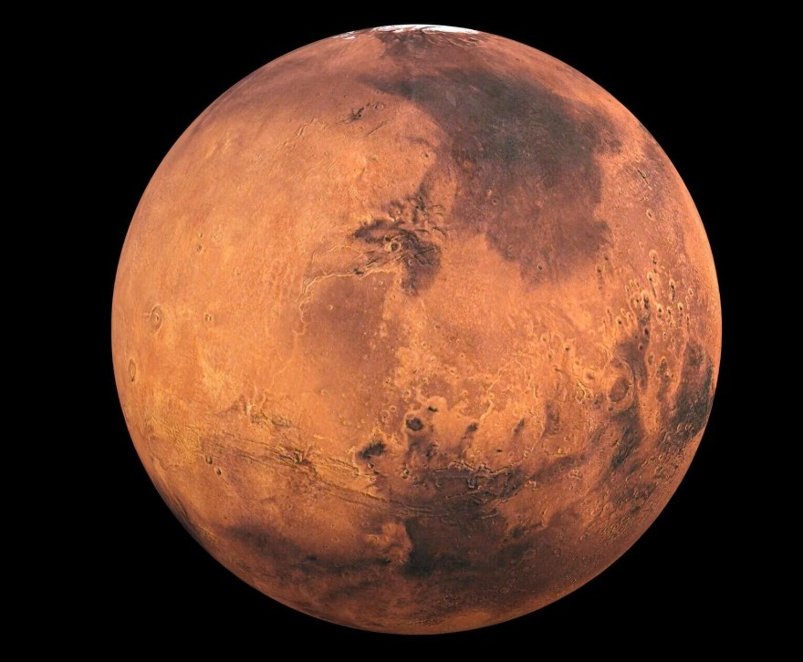

Mars
Mars is the fourth planet from the Sun and is often called the red planet because of its dusty, iron-rich surface. It is one of the most studied planet in our solar system because the scientists believe it may have once had liquid water. Today, Mars is cold and dry , but it has polar ice caps and seasonal weather changes.
Mars has a thin atmosphere made mostly of carbon dioxide and experiences large dust storms that can cover the entire planet. Because of its similarities to Earth, Mars is considered one of the most likely places where humans could explore or even live in the future. Scientists are currently sending rovers and orbiters to Mars to learn more about its geology, climate, and potential for life.

Facts About Mars
- Mars is known as the Red Planet because of iron oxide (rust) on its surface.
- Mars has the largest volcano in the solar system called Olympus Mons.
- Mars has two small moons named Phobos and Deimos.
- A day on Mars (a sol) is about 24 hours and 37 minutes.
- Mars has seasons similar to Earth due to its tilted axis.
- Scientists believe Mars once had liquid water on its surface.